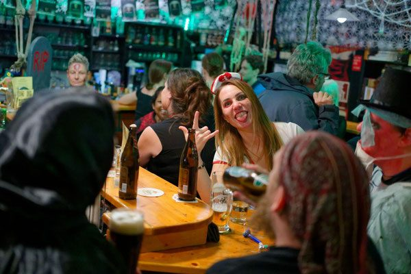
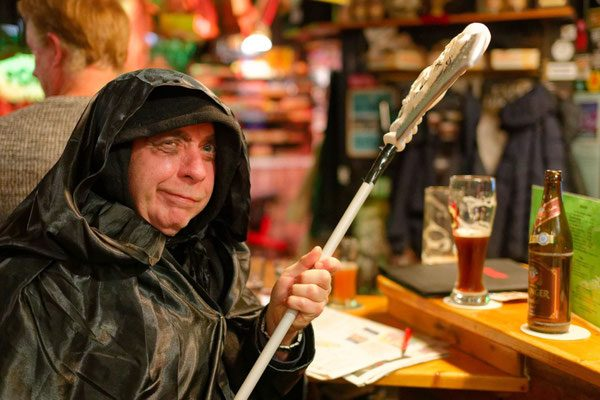
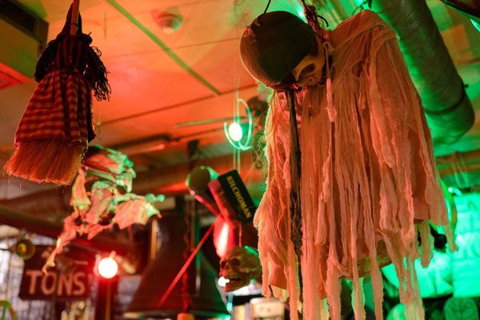
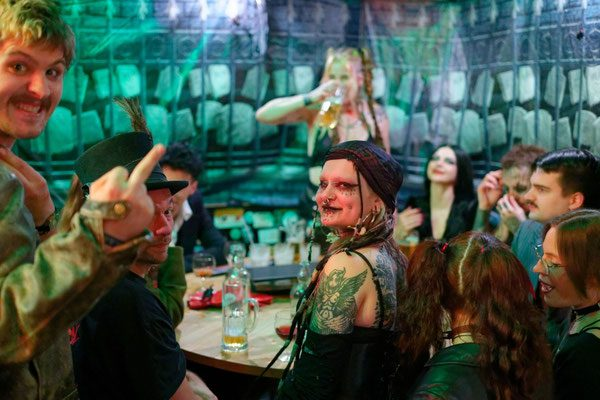
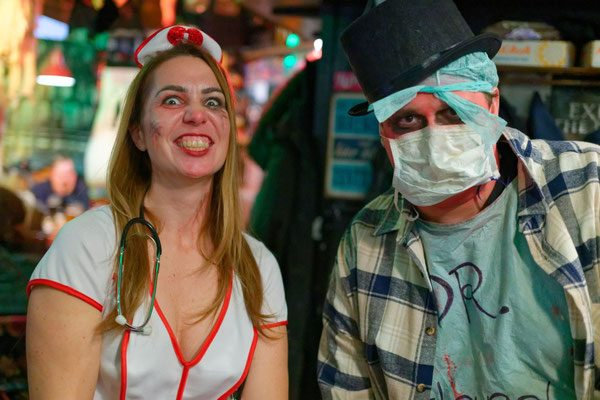
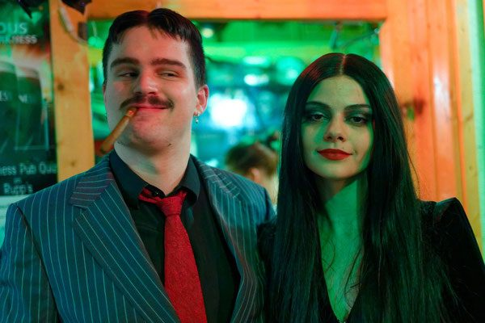
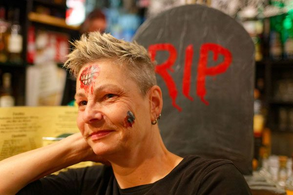
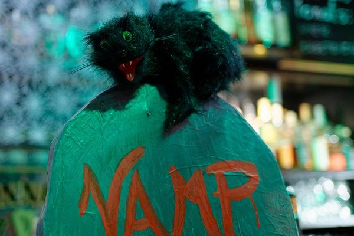
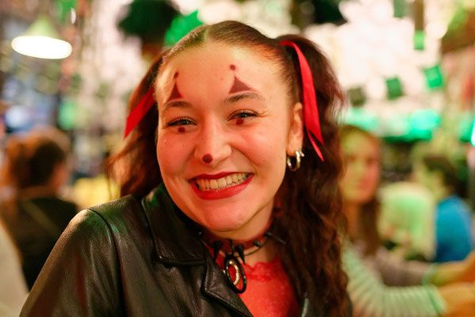

Rupp’s Edition No. 3
Ab sofort im Rupp’s: Bunnahabhain Jg. 2013, Cask Strength – die dritte eigene Abfüllung des Hauses.
Arbeitergasse 46 · seit 1991
Dienstag bis Samstag ab 18 Uhr: ein Bier des Monats vom Fass, eine Whisk(e)ykarte, die länger ist als die Speisekarte, monatliche Verkostungen und ein Pub Quiz, bei dem Smartphones verboten sind.




Ab sofort im Rupp’s: Bunnahabhain Jg. 2013, Cask Strength – die dritte eigene Abfüllung des Hauses.
Das Rupp’s im aktuellen Magazin. Weitere Berichte: Falter 30/2022, Bezirkszeitung Margareten 2018, Falter April 2014.
Aktuell: Kaltenhauser Bernstein (ab KW 35/2026). Davor: Schremser Kellerpils, Schwechater Wiener Lager, Stiegl Paracelsus Bio Zwickl.
Rupert Hutter führt das Rupp’s seit 1991 als Einzelunternehmen in der Arbeitergasse 46. Aus einem Grätzl-Bierlokal ist ein Pub mit einer der größten Whisk(e)ykarten der Stadt geworden – mit Stammtischen, Pub-Quiz-Abenden, Faschingsgschnas, St. Patrick’s Day und einem Halloween, für das sich halb Margareten verkleidet.
Zum Ruppiläum am Freitag, 15. Mai 2026 wird das 35-Jahr-Jubiläum gefeiert. Weitere Infos folgen demnächst.

»More than 1234 whiskies available« steht auf der Karte, und sie wird laufend erweitert. Von Originalabfüllungen bis zu nummerierten Einzelfässern der Scotch Malt Whisky Society.
Einmal im Monat, maximal zwölf Personen, acht Single Malts zu je 2 cl. Unkostenbeitrag der nächsten Spezialverkostung: 84 € pro Person.
Fünf Runden, fünf Wissenssparten, Teams von zwei bis vier Personen. Smartphones, Lexika und teamfremde Einsager sind nicht erlaubt.
Vegetarische und vegane Küche von Dienstag bis Samstag. Alle nicht gekennzeichneten Speisen sind laktovegetarisch, [V] kennzeichnet rein vegane Speisen.
Bitte beachten: Sonntag, Montag & Feiertage hat das Rupp’s geschlossen.
Di.–Sa. 18:00–2:00 Uhr
Di.–Sa. 18:00–22:00 Uhr
vegetarisch & vegan
Sonntag, Montag und an Feiertagen
Fotos von der Halloween-Party im Lokal – eines von mehreren Festen im Jahreslauf.




„Waren am Wochenende 2 Tage in Wien und hatten Glück im Rupp´s zu landen. Einfach gemütliche Kneipe zum Wohlfühlen. Wir freuen uns schon auf den nächsten Besuch … wenn nur die lange Anreise nicht wäre (909 km)“
Konsul, 26. September 2024
„das rupps ist einfach genial ein wohlfühlort und zum weiterempfehlen. das essen ist ausgezeichnet und die atmosphäre und auch ne sehr nette bedienung.“
Daniel, 4. Juli 2019